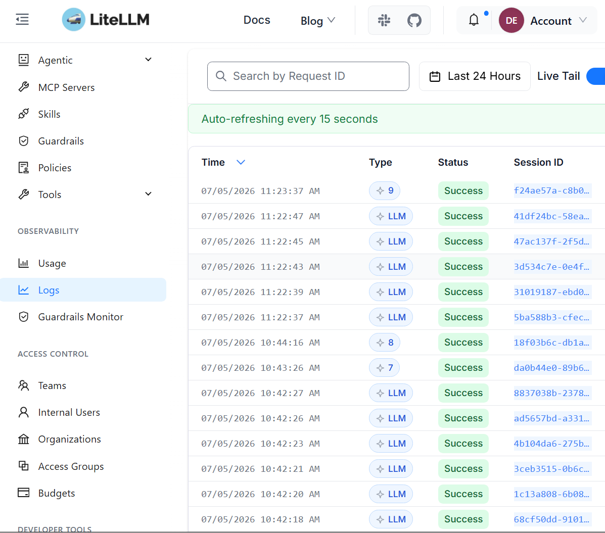
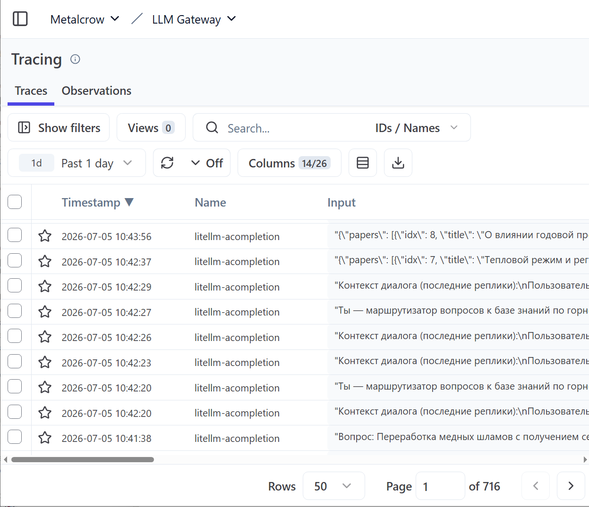
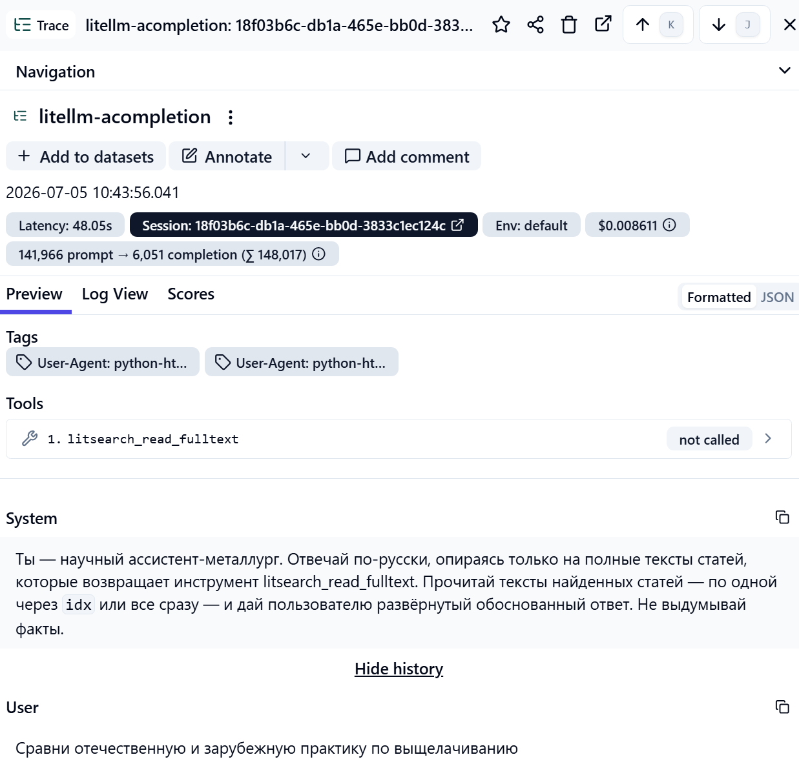

MetalCrow связывает статьи, эксперименты, технологии, режимы, установки и исследовательские команды в единый граф знаний и отвечает на вопросы по обогащению, металлургии и переработке со ссылками на источники.
Если ответа нет во внутренних документах, агент выходит в мировую литературу: абстракты, авторы, цитируемость — и полные тексты, которые система скачивает сама. Внешние данные всегда помечены.
Система показывает связанные сущности и историю решений — а не стопку PDF, которые ещё предстоит прочитать.
Отвечает на вопросы и генерирует гипотезы по графу — с цитатами и меткой достоверности. Источник выбирает сам: онтология, граф знаний или гибридный поиск.
Векторный смысловой поиск плюс точное совпадение терминов: понимает несколько языков, определяет синонимы и подсвечивает числа.
Статьи, эксперименты, материалы, режимы, установки и команды — связанные сущности и история решений на одном экране.
У каждого материала и установки — карточка: свойства, эксперименты, связанные документы и люди.
PDF и сканы загружаются прямо в систему: Docling + OCR, очередь обработки, статусы и покрытие корпуса.
Docling и OCR разбирают PDF и сканы; каждый фрагмент хранит провенанс — документ и страницу.
Термины и RU/EN-синонимы приводятся к каноническим сущностям по отраслевой онтологии.
Сущности и связи: кто, на какой установке, при каком режиме и что получил.
GraphRAG: агент достаёт подграф и фрагменты корпуса, собирает ответ с цитатами и оценкой достоверности.
Система не выдаёт гладкий текст без опоры: у каждого факта видно, на чём он держится и где источники расходятся.
Подтверждено несколькими независимыми внутренними источниками.
Единственный источник или косвенные данные — стоит проверить перед решением.
Источники расходятся: система покажет обе стороны, а не спрячет конфликт.
Утверждение опирается на данные вне внутреннего корпуса — это всегда видно.
Автоматический бенчмарк гоняет сквозные вопросы через живую систему: корректность, провенанс, маршрутизация, латентность — и честность на вопросах-ловушках, где правильный ответ «данных нет».
MetalCrow — не чёрный ящик. Все обращения к моделям идут через единый LLM-шлюз, а каждый шаг агента записывается в трейсинг: маршрут вопроса, вызовы инструментов, токены, латентность и стоимость. Любой ответ можно разобрать по шагам — от промпта до цитаты.



Цифры — из реального трейса на скриншоте слева: агент прочитал полные тексты статей (141 966 токенов контекста) и собрал обоснованный ответ.